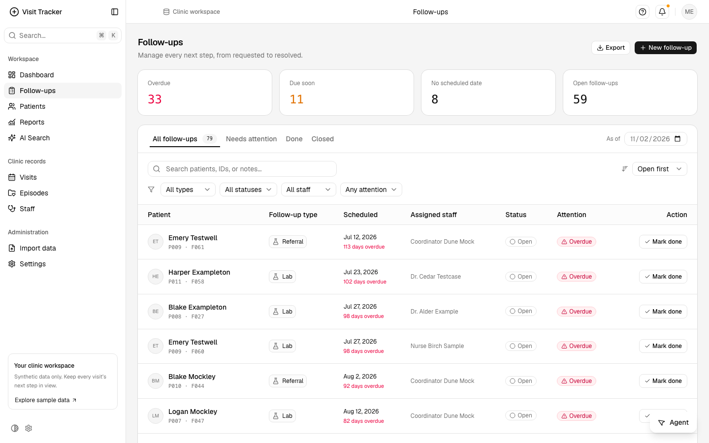
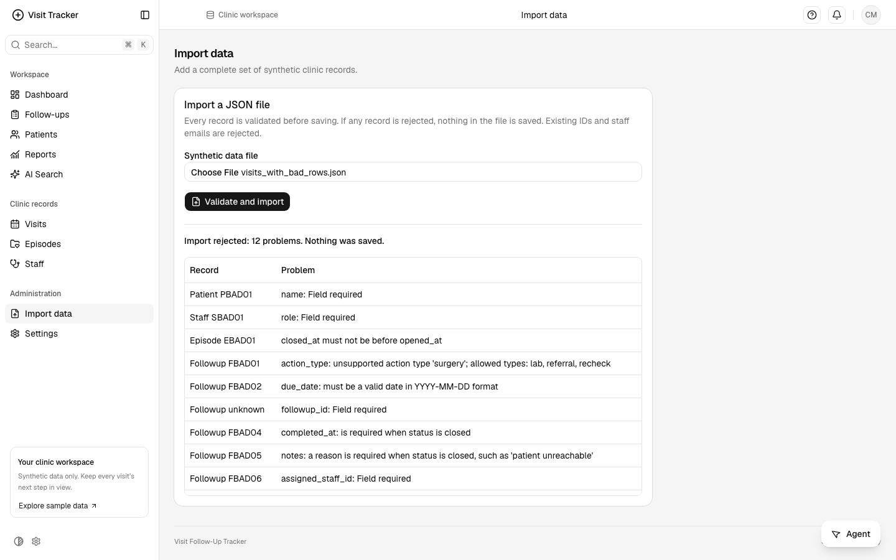
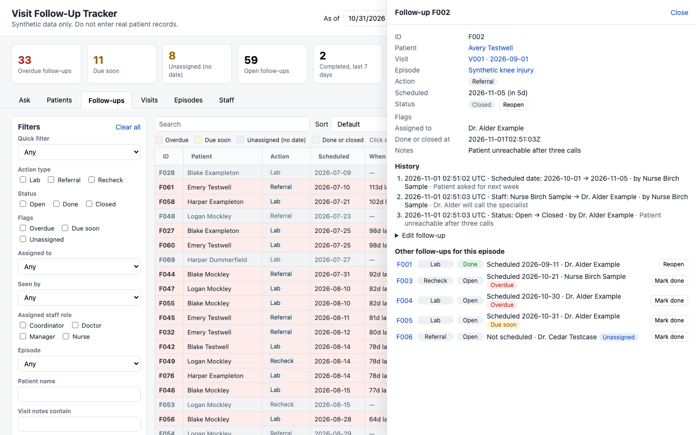
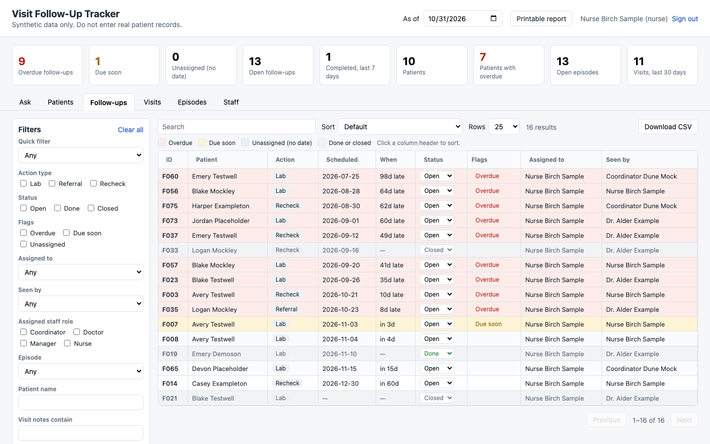
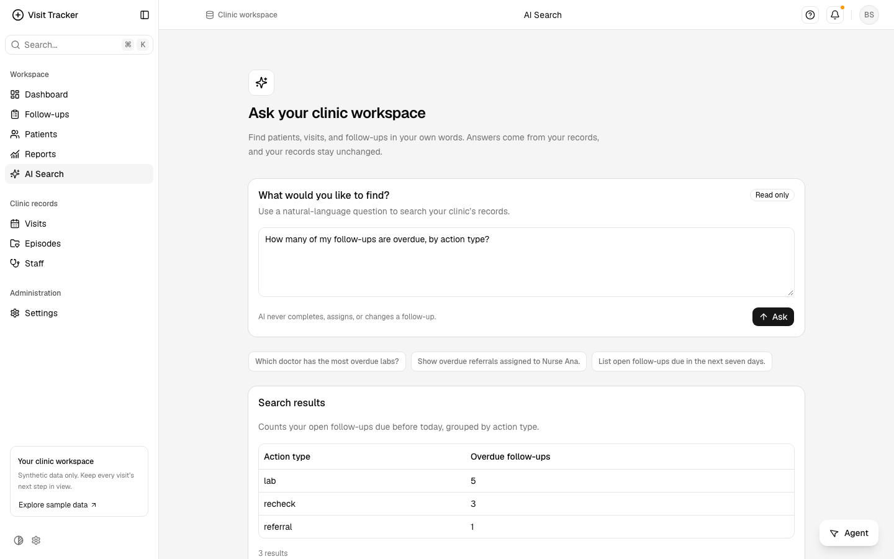
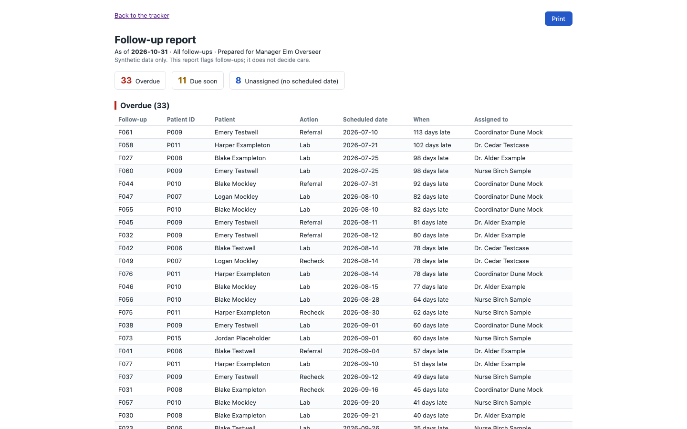

The model sees the question, the table layout, and the asker's staff ID. Patient records stay on the server.

$ python scripts/import_data.py --file data/generated/visits_with_bad_rows.json Rejected data/generated/visits_with_bad_rows.json: nothing was saved. 12 problem(s): patient PBAD01: name: Field required staff SBAD01: role: Field required episode EBAD01: closed_at must not be before opened_at followup FBAD01: action_type: unsupported action type 'surgery'; allowed types: lab, referral, recheck followup FBAD02: due_date: must be a valid date in YYYY-MM-DD format followup unknown: followup_id: Field required followup FBAD04: completed_at: is required when status is closed followup FBAD05: notes: a reason is required when status is closed, such as 'patient unreachable' followup FBAD06: assigned_staff_id: Field required visit VBAD01: patient_id: Field required episode EBAD02: patient PMISSING does not exist visit VBAD02: episode EMISSING does not exist $ python scripts/import_data.py --file data/generated/clean_visits.json Imported data/generated/clean_visits.json: 15 patients, 5 staff, 23 episodes, 40 visits, 79 followups $ python scripts/backup_db.py Backed up data/followups.db to backups/followups-20261101T025350Z.db: integrity_check ok, test restore matched (15 patients, 5 staff, 23 episodes, 40 visits, 79 followups, 0 followup_history) $ python scripts/delete_old_records.py --dry-run Would delete records from before 2016-10-31: 0 followup_history, 0 followups, 0 visits, 0 episodes, 0 patients
Connection.backup, integrity_check, and a test restore.--dry-run shows the counts first.The automated checks run on every pull request; the demo shows the same things live.